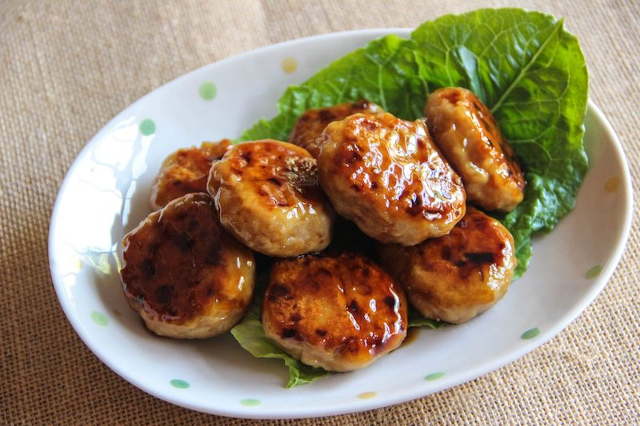
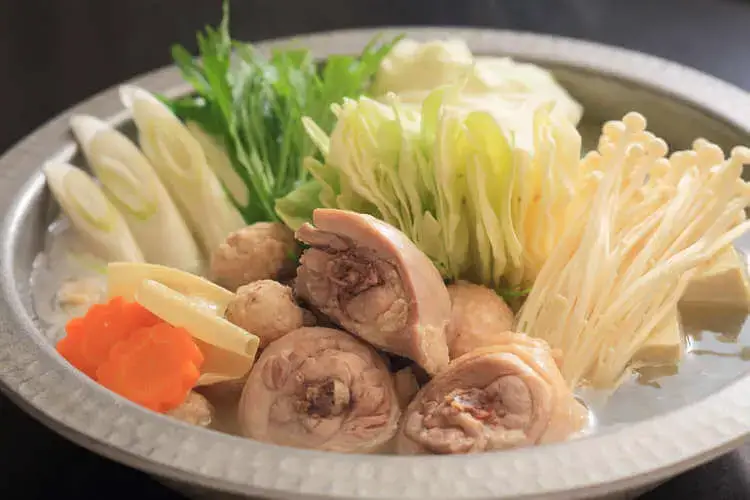

Yoko's Kitchen
Popular Recipes
-
Yakitori is grilled skewers made from all parts of the chicken, including chicken breast, chicken thighs, chicken hearts and gizzards. The meat is threaded onto sticks and cooked while being basted with a homemade sauce throughout the process. The sauce is called tare, and is somewhat similar to teriyaki sauce with both a sweet and salty element. These chicken skewers are typically served as an appetizer, although they’re hearty enough to serve as a full meal with some other dishes on the side.
-
Tsukune (minced chicken patties)
Tsukune (つくね) means Japanese-style meatballs. The ground meat (or minced meat) could be chicken, pork, or even fish. The most popular version is made with ground chicken so people often associate Tsukune recipe with Japanese grilled chicken meatballs.

Often, the meatballs are cooked yakitori style – skewered and grilled over a charcoal fire – but they also can be pan-fried or baked. -
Okonomiyaki (お好み焼き) is a popular pan-fried dish that consists of batter and cabbage. Selected toppings and ingredients are added which can vary greatly (anything from meat and seafood to wasabi and cheese). This variability is reflected in the dish's name; "okonomi" literally means "to one's liking". The dish is available all over Japan, but is particularly popular in the cities of Hiroshima and Osaka.

-
Mizutaki, literally meaning ‘cooked in the water’ is a traditional food in Fukuoka prefecture, Japan, and is typically known as a Japanese chicken hot pot dish. Mizu taki is a cooking method in which ingredients such as chopped chicken with bones and vegetables are slowly boiled in hot water.
